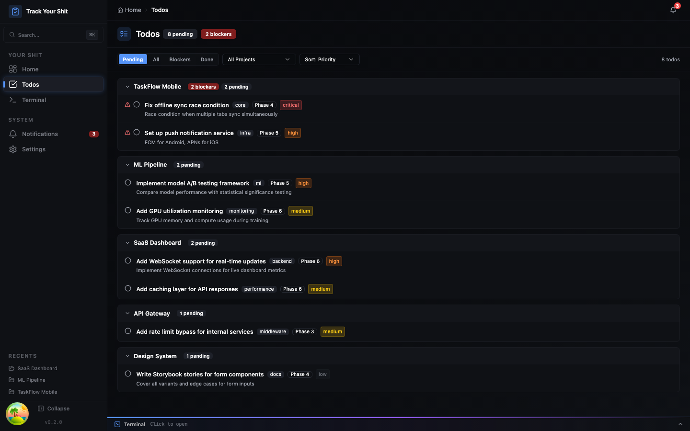
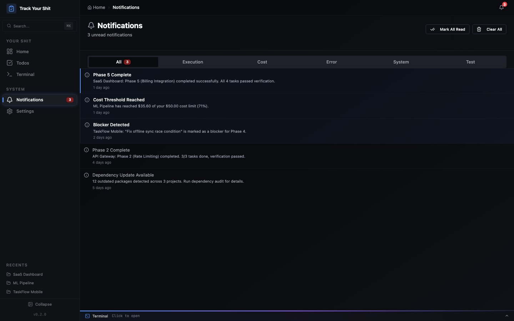
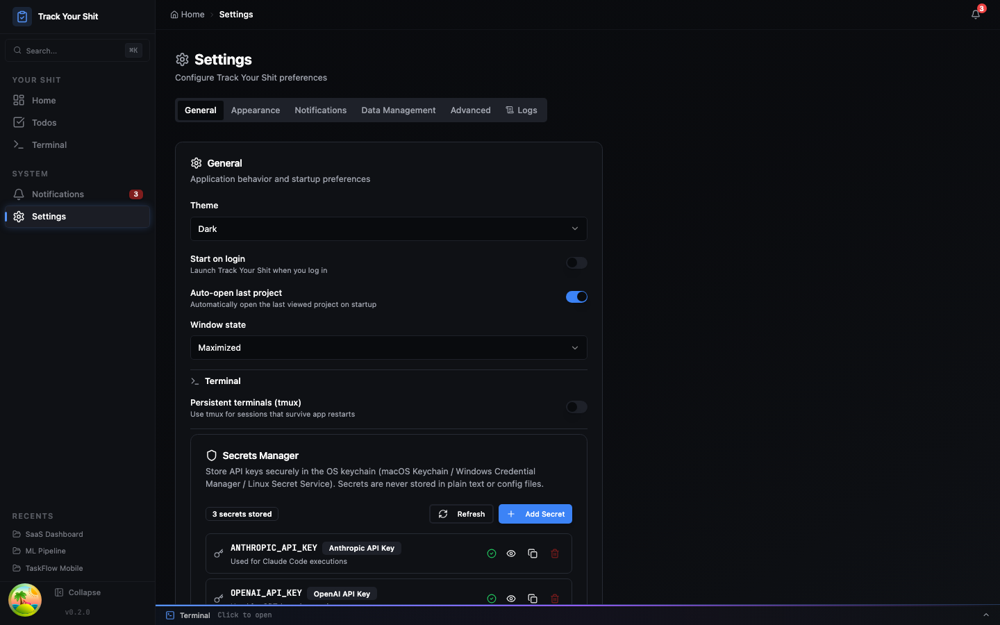
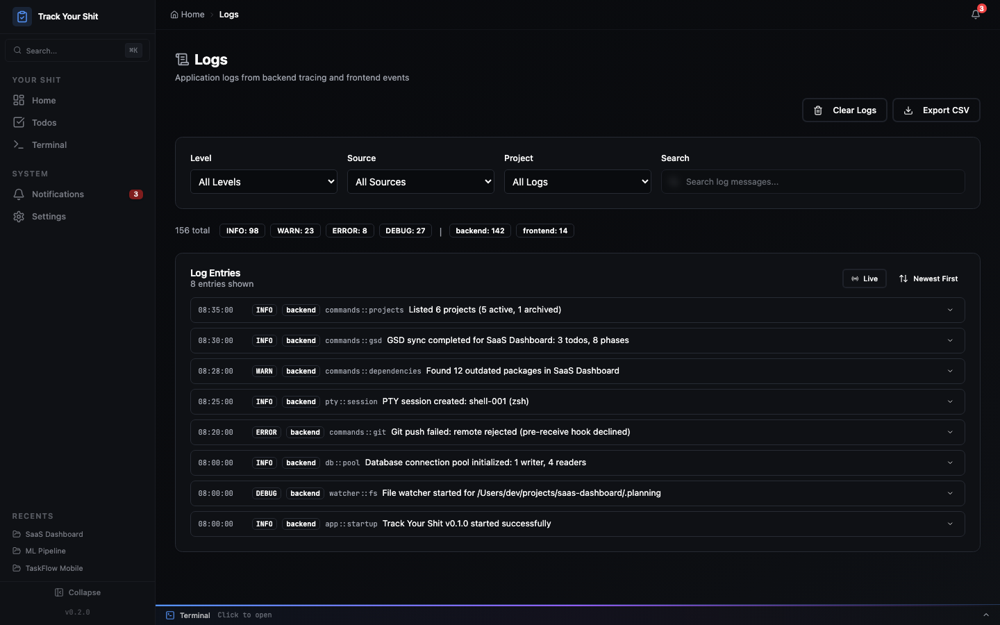

See it in action.
Real screenshots from the app — not mockups.
GSD Workflow
Plans, context, validation, UAT, milestones, and debug sessions — all visualized.

Plans & Summaries

Phase Context & Decisions

Validation & Test Map

User Acceptance Testing

Milestone Timeline

Debug Sessions
Project Management
Knowledge browsing, file management, todos, notifications, and more.

Knowledge Base

Cross-Project Todos

Notification Center

Settings & Secrets

Application Logs

File Browser